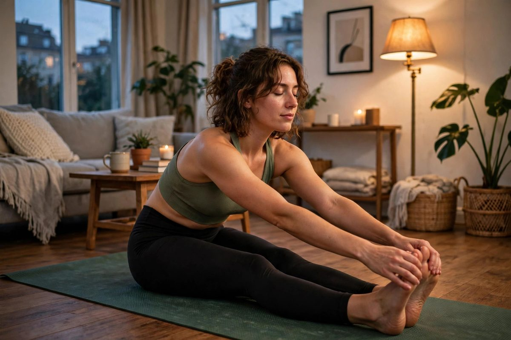

Sleep and Exercise
How exercise improves sleep, the best time of day to train, and why late-night workouts can keep you awake.
Exercise is one of the best treatments for poor sleep, and it works through several routes: it tires the body, it raises body temperature and lets it fall afterwards, and it reduces stress and anxiety. But timing matters, because exercise too close to bedtime can keep you awake. This guide explains how exercise helps sleep, when to do it, and how much is enough.
How exercise helps sleep
Regular exercise shortens the time it takes to fall asleep, increases deep sleep, and reduces night-time awakenings. The effect is strongest for moderate aerobic exercise, such as brisk walking, cycling or swimming, done regularly for several weeks. It also helps mood and anxiety, which are common causes of poor sleep. The improvement is gradual, not instant: most studies find the benefit builds over two to four weeks of regular exercise, so patience matters.
The best time to exercise
Morning and afternoon exercise are best for sleep. Morning exercise has the added benefit of bright light, which resets the body clock. Afternoon exercise is also good, because the body is warmest and strongest in the late afternoon. Evening exercise is fine for most people if it finishes at least two to three hours before bed, because the body needs time to cool down and the alertness to fade. Very vigorous exercise within an hour of bed is the one timing that commonly disturbs sleep.
How much is enough
About 150 minutes of moderate exercise a week, or 75 minutes of vigorous exercise, is the usual guidance for general health, and it is also enough to improve sleep. That is roughly 30 minutes on five days a week, and it can be broken into shorter bouts of 10 minutes. Walking counts, and it is the easiest place to start. More exercise helps up to a point, but very intense training, especially twice a day, can disturb sleep through muscle soreness and a raised stress response.
Exercise for insomnia
For people with insomnia, regular moderate exercise is one of the most effective non-drug treatments, and it works better than sleeping tablets in the long term. The key is regularity: a single workout does little, but a daily walk for a month changes sleep noticeably. Combine exercise with the other basics, a regular schedule, morning light, and no late caffeine, and the effect is larger than any one change alone. If insomnia persists for months despite these steps, see a doctor, because there are effective treatments.
What to avoid
Avoid vigorous exercise in the last hour before bed, because it raises heart rate, body temperature and alertness. Avoid exercising in a hot room late at night for the same reason. If you can only exercise late, choose gentle activity such as stretching or slow yoga, which relaxes rather than stimulates. And avoid using exercise as a punishment for a bad night: a tired body needs rest, and a gentle walk is better than a hard session when you are already exhausted.
A week of exercise for better sleep
Take a person who walks briskly for 30 minutes each morning and does a short strength session twice a week. In the first week, the change is small: they fall asleep a little faster, but mornings feel the same. By week three, the difference is clear: they fall asleep within 15 minutes most nights, wake less often, and feel more alert in the morning. The morning walk helps twice, through exercise and through bright light, which resets the clock. The strength sessions help by tiring the body and building muscle. The example shows why exercise is a slow treatment: it works over weeks, not nights, and the benefit builds with regularity rather than intensity.
Frequently Asked Questions
Does exercise help you sleep?
Yes. Regular moderate exercise shortens the time to fall asleep, increases deep sleep, and reduces night waking. The benefit builds over two to four weeks.
What time of day should I exercise for sleep?
Morning or afternoon is best. Evening exercise is fine if it finishes at least two to three hours before bed.
How much exercise improves sleep?
About 150 minutes of moderate exercise a week, such as 30 minutes of brisk walking on five days.